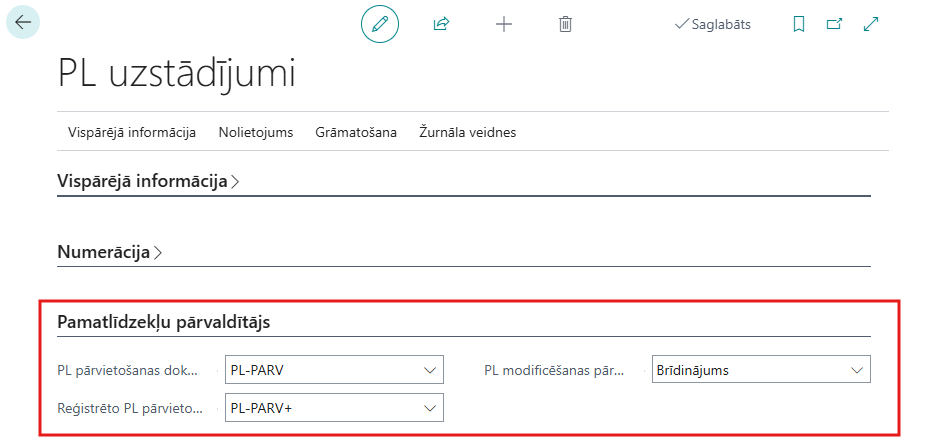
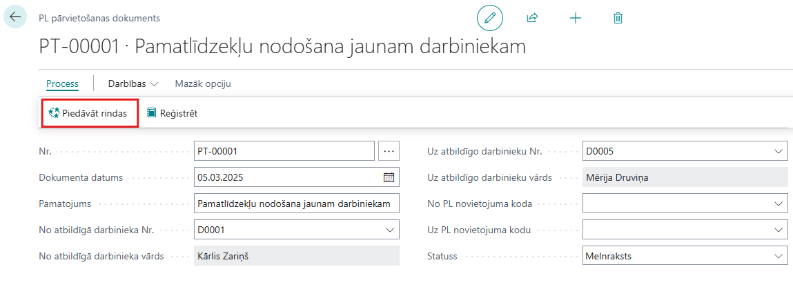
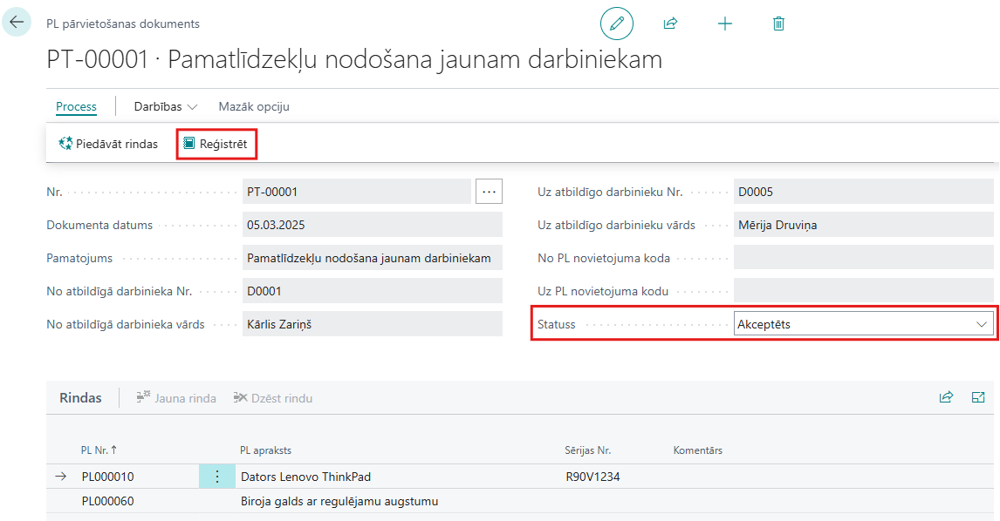
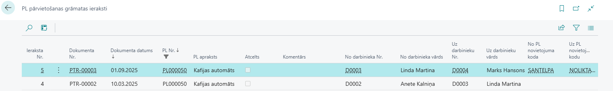

Darba uzsākšana
Piekļuves tiesības
Lai izmantotu Fixed Asset Keeper, lietotājam nepieciešams piešķirt tiesību kopu EAK-FA-KEEPER.
Fixed Asset Keeper Uzstādījumi
Nospiediet Meklēt ikonu lapas augšējā labajā stūrī, ievadiet PL uzstādījumi un izvēlieties atbilstošo saiti
Aizpildiet PL Uzstādījumi cilni Pamatlīdzekļu pārvaldītājs:
- PL pārvietošanas dokumentu numuri - uzstādiet numuru sēriju pamatlīdzekļu pārvietošanas dokumentiem
- Reģistrēto PL pārvietošanas dokumentu numuri - uzstādiet numuru sēriju reģistrētiem pamatlīdzekļu pārvietošanas dokumentiem
- PL modificēšanas pārbaude - norāda, vai ir atļauts manuāli modificēt PL novietojuma kodu un Atbildīgo darbinieku pamatlīdzekļa kartītē. Izvēlieties vienu no opcijām:
- Nav - netiek kontrolēts, ja lauki kartītē tiek manuāli mainīti. Izvēlieties šo opciju, ja Fixed Asset Keeper uzņēmumā netiek izmantots;
- Brīdinājums - ja lauki kartītē tiek mainīti manuāli, tiks parādīts brīdinājums;
- Kļūda - laukus kartītē nav atļauts mainīt.
Jebkura no opcijām ļauj veikt sākotnējo ierakstu pamatlīdzekļa kartītē par PL novietojumu un Atblidīgo darbinieku.

Kā lietot
Pamatlīdzekļa pārvietošana
Nospiediet Meklēt ikonu lapas augšējā labajā stūrī, ievadiet PL pārvietošanas dokumenti un izvēlieties atbilstošo saiti.
Izveidojiet jaunu dokumentu, spiežot +Jauns un aizpildiet dokumentu:
- Dokumenta datums
- Pamatojums
- Ja vēlaties mainīt atbildīgo darbinieku, aizpildiet laukus No atbildīgā darbinieka Nr. un Uz atbildīgo darbinieku Nr.
- Ja vēlaties mainīt PL novietojumu, aizpildiet laukus No PL novietojuma koda un Uz PL novietojuma kodu
Spiediet Process – Piedāvāt rindas. Rindas tiks aizpildītas ar pamatlīdzekļiem, kuriem Atbildīgais darbinieks un PL novietojuma kods sakrīt ar PL Pārvietošanas dokumenta virsrakstā norādītajām vērtībām

Izdzēsiet liekās rindas, ja nepieciešams. Rindas var pievienot arī manuāli, ja pamatlīdzekļu Atbildīgais darbinieks un PL novietojuma kods sakrīt ar PL Pārvietošanas dokumenta virsrakstā norādītajām vērtībām.
Ja vēlaties izdrukāt pārvietošanas dokumentu, spiediet Darbības – Drukāt
Kad pamatlīdzekļi nodoti, nomainiet dokumenta statusu uz Akceptēts
Reģistrējiet pārvietošanas dokumentu, spiežot Process – Reģistrēt. Reģistrēt iespējams tikai dokumentus ar statusu Akceptēts.

Pamatlīdzekļu pārvietošanas vēsture
Lai apskatītu reģistrētos pamatlīdzekļu pārvietošanas dokumentus, atveriet lapu Reģistrētie PL pārvietošanas dokumenti.
Lai apskatītu pamatlīdzekļa pārvietošanas vēsturi, atveriet pamatlīdzekļa kartīti, spiediet Saistītās – Vēsture – PL pārvietošanas grāmatas ieraksti
